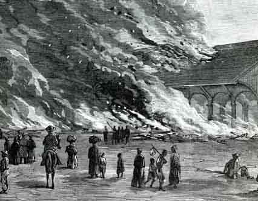
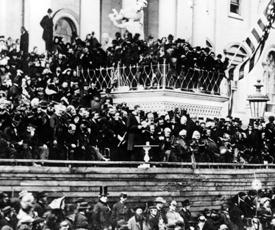
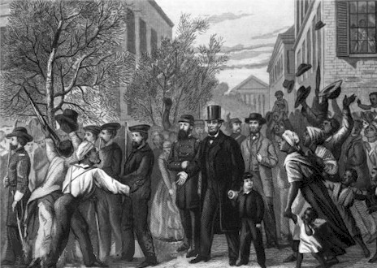

|
For much of 1864, the war effort did not go well for the
Union, as military failures and problems on the homefront
resulted in low morale and shaken confidence in President
Lincoln. Then, on September 3, 1864, General William T.
Sherman captured Atlanta. This caused a shift in momentum
that lasted for the rest of the war. In November, Lincoln
was reelected. From that point forward, he had much more
leverage in the prosecution of the war, as political
considerations played much less of a role. At the same time,
Generals Grant and Sherman were preparing to press their
advantage in hopes of bringing the war to a close.
Sherman Marches through the Confederacy
Sherman began first. He had already been wreaking havoc
in Georgia, and he continued to do so. He tore his way
through the rest of the state, and on December 24, 1864 he
|

An 1864 engraving showing the
destruction of Atlanta.
|
captured Savannah. While Sherman was making his way through
the state, a farmer came up to him and said, "Why don't you
go over to South Carolina and serve them this way? They
started it." What the farmer didn't know was that Sherman
had every intention of doing so, and after convincing Grant,
heset off on February 1, 1865. His march though South
Carolina had two strategic purposes; to destroy all the war
resources in Sherman's path and to come up on Lee's rear in
order to catch the army of Northern Virginia between the
armies of Grant and Sherman and "wipe out Lee", as Grant put
it. Sherman also had a third purpose in mind, to punish the
state that had started the war. As one soldier declared:
"Here is where treason began and, by God, here is where it
will end."
Sherman followed this with the much more famous "March to
the Sea", but it was the march through the Carolinas that
really broke the back of the Confederacy. It destroyed the
Carolina countryside, and it greatly demoralized the
Confederates. Sherman himself said that the march through
the Carolinas had been ten times more important in winning
the war than the march to the sea. Through the months of
February and March, Sherman's troops continued to tear up
the South and to defeat the much weaker force commanded by
General Joseph Johnston in skirmish after skirmish. Sherman
eventually put an and to the destruction on March 21, and
prepared to head North in order to help Grant "wipe out
Lee".
Black Soldiers for the South
The South was desperate by this time, and the Confederate
government began to consider the most desperate of
solutions, at least for them: the arming of black troops.
Many important Confederates, including Robert E. Lee, came
out in favor of the move. Others recognized the logical
inconsistency of arming slaves. As Georgian Howell Cobb
wrote "The day you make soldiers of [slaves] is the
beginning of the end of the revolution. If slaves will make
good soldiers our whole theory of slavery is wrong." The
resolution passed the house but failed in the Senate by one
vote. Several states tried to enact their own laws providing
for the enlistment of black troops, but only Virginia was
successful. They hastily organized two black regiments in
Richmond, but they never saw any action. These soldiers were
freed two weeks later when Union troops, led by a black
cavalry regiment, marched into the Confederate capital.
African Americans also made progress in the early months
of 1865. The thirteenth amendment was approved by Congress
on January 31, and it began to quickly make its way through
|

Lincoln's second inauguration. The president
is at the very center of the picture.
|
the state legislatures. Frederick Douglass attended
Lincoln's inaugural reception, the first time an African
American had ever been allowed to attend a White House
social function. On February 1, John Rock of Boston became
the first African American attorney to try a case before the
U.S. Supreme Court. At the same time, freedmen in the South
also received good news. Sherman, one of the most
conservative generals in the North, issued Special Field
Order No. 15, the most radical field order of the war. It
opened all of the abandoned land on the coast between
Charleston and Florida for settlement by ex-slaves who had
been left homeless by the war. In addition, the order
granted 40 acre plots for each family with the provision
that they were to be granted possessory title. 60,000 people
moved onto the land.
By March, the Confederate army was nearing the point of
collapse. The only meaningful force left was Lee's Army of
Northern Virginia, with 55,000 men. This paled in comparison
to the 120,000 that Grant commanded, with Sherman's troops
still on the way. Leaders on both sides knew the end was
near, and Lincoln traveled to Virginia to meet with Grant,
Sherman and Admiral David Porter. At their meeting aboard
the ship River Queen, on March 28, the four men discussed
the approaching end of the war. Lincoln insisted on generous
terms, saying "Let them all go, officers and all, I want
submission and no more bloodshed ... I want no one punished;
treat them liberally all round. We want those people to
return to their allegiance to the Union and submit to the
laws."
Grant continued to push his advantage. The Confederate
force was reduced by 20% between March 25 and April 1. Lee
knew he had to retreat. As Jefferson Davis worshipped at
church, he received a telegram from Lee: Richmond must be
given up. Davis turned pale, which was enough for the rest
of the parishioners to figure out what was happening. The
town was evacuated. What the confederates could take with
them, they did; what they couldn't they burned. As night
came, mobs took over and began burning buildings. In fact,
Southerners burned more of their own capital than the enemy
had burned of Atlanta.
Lincoln Visits Richmond
On April 3, the Union army marched into Richmond followed
by President Lincoln, who was accompanied by General Grant.
They got there only hours after the last remnants of the
Army of Northern Virginia had departed. Grant soon left to
continue pursuing Lee, but Lincoln remained. He entered the
enemy capital and sat down in the study of the President of
the Confederacy only forty hours after Davis had left it.
Lincoln's visit to Richmond was one of the most powerful
scenes of the war. Lincoln walked the streets with an escort
of only ten sailors and Admiral Porter. He was soon
surrounded by a throng of African Americans shouting such
|

President Lincoln enters Richmond.
|
things as "Glory to God! Glory! Glory! Glory!", "Bless the
Lord" and "Hallelujah!". Several freed slaves touched
Lincoln to make sure he was real. "I know I am free,"
shouted an old woman, "for I have seen Father Abraham and
felt him." When one man fell to his knees in front of
Lincoln, the President said "Don't kneel to me. That is not
right. You must kneel to God only, and thank him for the
Liberty you will enjoy hereafter."
By this time, Lee's army was finished. Reduced to 35,000
men, the Army of Northern Virginia met up thirty-five miles
to the west, at Amelia Courthouse, where there was supposed
to be a trainload of rations. Instead, they found
ammunition, which they did not need. The army paused to
forage for food, which proved fatal, for it allowed the
Union troops to capture 6,000 of them. By this time, Grant
enjoyed a 4 to 1 advantage in army size over Lee, and so on
April 7 Grant sent a note calling on Lee to surrender. Lee
resisted, and on April 9 decided to try one last assault, on
General Sheridan's troops blocking the road near Appomatox
Court House. The rebel yells rang out one last time, but as
Lee's troops approached the road near Appomattox, they saw
that Grant had anticipated the move, and arranged for them
to be outnumbered by about 5 to 1. With a heavy heart, Lee
decided that "there is nothing left for me to so but go and
see General Grant, and I would rather die a thousand
deaths."
Lee and Grant Meet at Appomattox
Lee and Grant met at the home of Wilmer McLean, whose
house in Manassas was used as the Confederate headquarters
for the first battle of the war. Lee arrived dressed
immaculately in full-dress uniform, including sash and
jeweled sword. Grant appeared wearing private's blouse,
mud-stained pants and no sword. As instructed, Grant offered
generous terms, allowing men to keep their horses and
providing them with rations. The surrender completed, the
two men then saluted somberly and parted.
Three days later, a formal surrender ceremony was held.

An 1867 engraving of Lee's surrender
to Grant.
|
The Union officer in charge of the ceremony was Joshua
Lawrence Chamberlain. Leading the southerners as they
marched toward two of Chamberlain's brigades in order to
yield their guns and flags was John B. Gordon, one of Lee's
hardest fighters who by that time commanded Stonewall
Jackson's old corps. First in line of march behind him was
the Stonewall Brigade, five regiments containing 210 ragged
survivors of four years of war. As Gordon approached at the
head of these men with "his chin drooped to his breast,
downhearted and dejected in appearance," Chamberlain gave a
brief order, and a bugle call rang out. Instantly the Union
soldiers shifted from order arms to carry arms, the salute
of honor. Hearing the sound, General Gordon looked up in
surprise, and with sudden realization turned smartly to
Chamberlain, dipped his sword in salute, and ordered his own
men to carry arms. These enemies in many a bloody battle
ended the war not with shame on one side and exultation on
the other but with a soldier's "mutual salutation and
farewell ".
Lincoln's Last Speech
The news of Lee's surrender traveled quickly through the
North. The fall of the rebel capital had merited a
nine-hundred gun salute in Washington; Lee's surrender
produced another five hundred. Lincoln shared in the
celebrations, but he had already begun to consider the
future. When he consented to give a speech on April 11, he
reiterated his intent to be magnanimous toward the South,
and spoke in favor of enfranchising literate African
Americans and black veterans.
At least one listener interpreted this speech as an
indication that Lincoln was moving closer to the Radical
Republicans. "That means nigger citizenship," snarled John
Wilkes Booth to a friend. "Now, by God, I'll put him
through. That is the last speech he will ever make!"
Source: Christopher Bates for the History 139A website
|